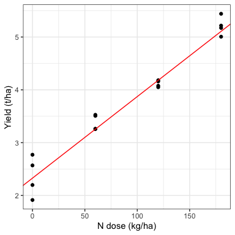
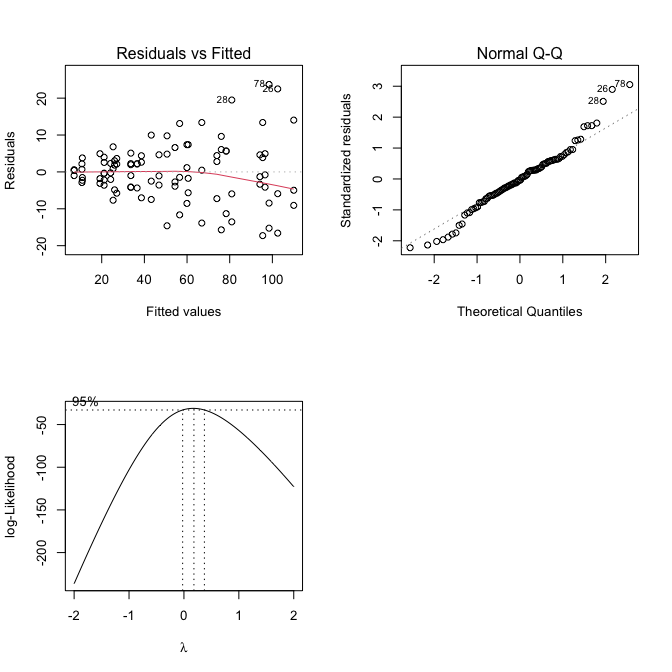
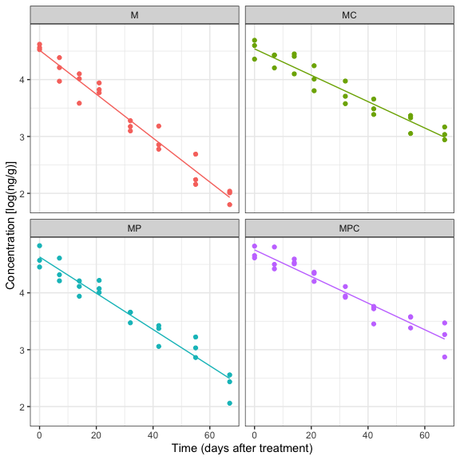
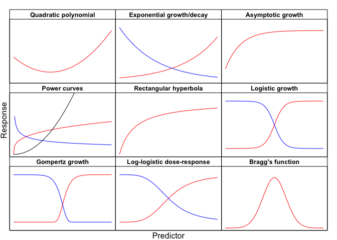
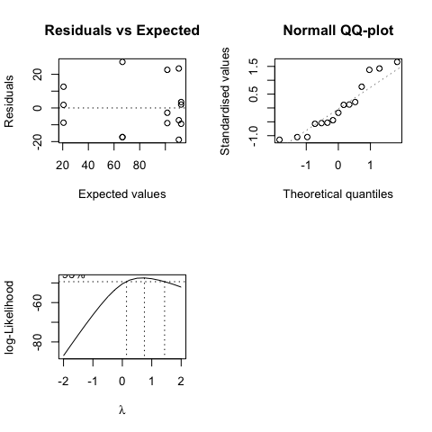
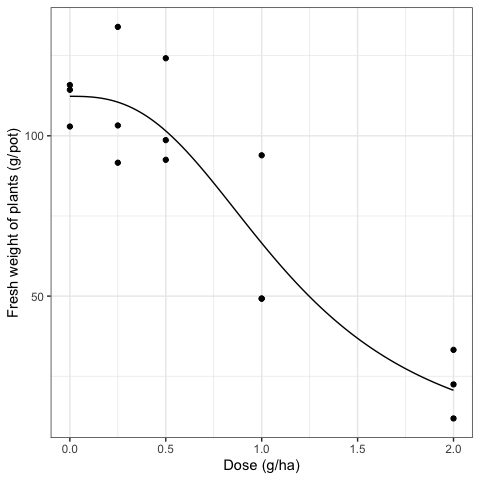

Capitolo 11 Modelli di regressione ‘avanzati’
Nella sperimentazione agronomica e, in genere, biologica, la variabile indipendente (o le variabili indipendenti) può (possono) rappresentare una quantità, come, ad esempio, la dose di un fitofarmaco, il tempo trascorso da un certo evento, la fittezza di semina e così via. Abbiamo visto che, in questa condizione, l’analisi dei dati richiede i cosiddetti modelli di regressione, tra i quali abbiamo introdotto, nel Capitolo 4, un modello di regressione lineare semplice, che abbiamo utilizzato per analizzare i dati di un esperimento senza repliche. Purtroppo, un modello così semplice è spesso insufficiente per le esigenze poste dalla ricerca agraria e quindi, in questo Capitolo, introdurremo diverse estensioni, utilizzando set di dati provenienti da esperimenti reali.
11.1 Esempio 11.1: regressione lineare per un esperimento a blocchi randomizzati
Contrariamente ai dati mostrati nell’Esempio 4.2 (Capitolo 4), gli esperimenti in agricoltura, il più delle volte, contengono repliche vere e sono disegnati a blocchi randomizzati completi. Ad esempio, consideriamo i dati ‘NWheat’, contenuti nel package statforbiology e relativi ad un esperimento, appunto, a blocchi randomizzati con quattro repliche, finalizzato a valutare la relazione tra la dose di fertilizzazione azotata (quattro dosi, da 0 a 180 kg/ha) e la resa del frumento (in tonnellate di granella per ettaro).
Questo dataset può essere descritto utilizzando un semplice modello di regressione lineare, integrato con un termine aggiuntivo per l’effetto del blocco, che risulta necessario per garantire l’indipendenza dei residui:
\[Y_{ij} = \gamma_j + \beta_0 + \beta_1 \, X_i + \varepsilon_{ij}\]
In questo modello, \(Y_{ij}\) è la produzione per l’i-esima dose nel j-esimo blocco, \(\gamma_j\) è l’effetto del j-esimo blocco, con il consueto vincolo che \(\gamma_1 = 0\), \(\beta_0\) è l’intercetta per il primo blocco, \(\beta_1\) è la pendenza della retta di regressione, \(X_i\) è la dose di fertilizzazione e \(\varepsilon_{ij}\) sono i residui, con media pari a 0 e deviazione standard pari a \(\sigma\). In pratica, l’equazione precedente descrive una risposta produttiva che aumenta linearmente con la dose di azoto, con una pendenza unica, mentre l’intercetta dipende dal blocco (ovvero, quattro rette parallele, una per blocco).
Considerando che il dataset contiene repliche vere, possiamo anche pensare di ‘trasformare’ la ‘dose’ in un fattore nominale e stimare un modello ANOVA a due vie, come quello mostrato nell’Esempio 4.3 (Capitolo 4).
Il confronto tra questi due modelli è di grande interesse: il secondo modello fornisce sempre il miglior adattamento ai dati osservati, perché considera solo le risposte ai livelli di dose selezionati, senza imporre alcun vincolo su ciò che accade tra una “dose” e quella successiva. D’altra parte, il primo modello, seppure imponga il vincolo che le risposte siano allineate, è più realistico dal punto di vista biologico, perché non trascura l’esistenza di una curva “dose-risposta” continua, che è proprio il principale elemento di interesse di questo studio.
Per comprendere quali informazioni si ottengano dal confronto tra i due modelli, iniziamo le analisi trasformando sia la dose che il blocco in fattori nominali (si noti però che per il fattore nominale ‘DoseF’ viene creata una nuova variabile, al fine di conservare la variabile numerica per un uso successivo, senza quindi sovrascriverla). Successivamente, stimiamo un modello ANOVA a due vie (riquadro sottostante); il controllo delle assunzioni di base non evidenzia problemi e non viene mostrato per brevità. Calcoliamo la somma dei quadrati dei residui (0.381) e la memorizziamo per utilizzarla in seguito.
# Example 11.1
# Linear regression for an RCBD
# Loading the packages
library(statforbiology)
library(emmeans)
library(multcomp)
# Loading and transforming the data
# The dose is recoded as a factor and a new variable is created
dataset <- getAgroData("NWheat")
dataset <- transform(dataset, DoseF = factor(Dose),
Block = factor(Block))
head(dataset)
## Dose Block Yield DoseF
## 1 0 1 2.198 0
## 2 0 2 2.569 0
## 3 0 3 2.771 0
## 4 0 4 1.914 0
## 5 60 1 3.507 60
## 6 60 2 3.527 60
# Model 1: ANOVA model with two nominal predictors
mod.pure <- lm(Yield ~ DoseF + Block, data = dataset)
# Variance partitioning
anova(mod.pure)
## Analysis of Variance Table
##
## Response: Yield
## Df Sum Sq Mean Sq F value Pr(>F)
## DoseF 3 17.2596 5.7532 136.005 8.172e-08 ***
## Block 3 0.2315 0.0772 1.824 0.2129
## Residuals 9 0.3807 0.0423
## ---
## Signif. codes: 0 '***' 0.001 '**' 0.01 '*' 0.05 '.' 0.1 ' ' 1
# Getting the RSS and storing it
RSSpure <- deviance(mod.pure)
RSSpure
## [1] 0.3807132In secondo luogo, stimiamo il modello di regressione lineare semplice, la cui equazione è stata mostrata poco sopra. La somma dei quadrati dei residui per questo modello è, come previsto, più alta di quella del modello ANOVA precedente, confermando che il modello ANOVA presenta una miglior bontà di adattamento rispetto al modello di regressione.
# Example 11.1 [continuation]
# Model 2. Regression model
# The dose is not transformed into a factor!
mod.reg <- lm(Yield ~ Block + Dose, data = dataset)
coef(summary(mod.reg))
## Estimate Std. Error t value Pr(>|t|)
## (Intercept) 2.32775000 0.1247516146 18.6590771 1.123724e-09
## Block2 0.12975000 0.1465133410 0.8855849 3.947884e-01
## Block3 0.19450000 0.1465133410 1.3275242 2.112272e-01
## Block4 -0.11775000 0.1465133410 -0.8036811 4.386038e-01
## Dose 0.01544167 0.0007721931 19.9971568 5.352483e-10
# Residual sum of squares
RSSreg <- deviance(mod.reg)
RSSreg
## [1] 0.4722555A questo punto, è possibile confrontare i due modelli utilizzando il cosiddetto test F per la mancanza di adattamento; questa procedura si basa sull’idea che la somma dei quadrati dei residui del modello di regressione contenga sempre due possibili tipi di errore:
- errore puro, ovvero la discrepanza tra ciascun valore osservato e la media del gruppo a cui esso appartiene;
- mancanza d’adattamento, ovvero la discrepanza tra la media del gruppo e la retta di regressione, che è appunto una misura di quanto sia “scadente” il modello di regressione.
Al contrario, la somma dei quadrati dei residui del modello ANOVA corrispondente (con la ‘dose’ trasformata in un fattore nominale) contiene solo l’“errore puro”; di conseguenza, la mancanza d’adattamento può essere ottenuto per sottrazione, come mostrato nel riquadro sottostante.
Anche il numero di gradi di libertà di queste devianze può essere ottenuto per sottrazione: il modello di regressione ha 11 gradi di libertà (16 individui meno 5 parametri stimati), mentre il modello ANOVA ne ha 9; di conseguenza, il numero di DF per la mancanza di adattamento è 2 (ovvero 11 - 9).
Le varianze per l’errore puro e per la mancanza d’adattamento si ottengono dividendo le rispettive devianze per i gradi di libertà, ovvero: \(MS_{LOF}/DF_{LOF} = 9,154/2 = 4,577\) e \(MS_{pure}/DF_{pure} = 38,071/9 = 4,230\). Il rapporto F per la mancanza di adattamento è quindi:
\[\begin{equation} F_{LOF} = \frac{ MS_{LOF} } {MS_{pure}} = \frac{4.577}{4.230} = 1.082 \tag{11.1} \end{equation}\]
Con R, possiamo usare la funzione anova(), passando entrambi i modelli come argomenti.
# Example 11.1 [continuation]
# Test for lack-of-fit with R
anova(mod.reg, mod.pure)
## Analysis of Variance Table
##
## Model 1: Yield ~ Block + Dose
## Model 2: Yield ~ DoseF + Block
## Res.Df RSS Df Sum of Sq F Pr(>F)
## 1 11 0.47226
## 2 9 0.38071 2 0.091542 1.082 0.3792L’ipotesi nulla del test per la mancanza d’adattamento è che questa componente non sia esistente e distinguibile dall’errore puro; il rapporto F è molto piccolo e il valore P è superiore a 0.05, quindi concludiamo che il modello di regressione fornisce una buona descrizione dei dati osservati.
La tabella ANOVA che segue è invece quella usuale, ottenuta rimuovendo gli effetti dal modello e valutando l’entità di incremento della devianza residua. Viene confermato che l’effetto causale della dose sulla resa è altamente significativo.
# Example 11.1 [continuation]
# Test for goodness of fit with R
anova(mod.reg)
## Analysis of Variance Table
##
## Response: Yield
## Df Sum Sq Mean Sq F value Pr(>F)
## Block 3 0.2315 0.0772 1.7972 0.2058
## Dose 1 17.1680 17.1680 399.8863 5.352e-10 ***
## Residuals 11 0.4723 0.0429
## ---
## Signif. codes: 0 '***' 0.001 '**' 0.01 '*' 0.05 '.' 0.1 ' ' 1A final remark is that, with this model, the estimated intercept is block-specific (see Code box 11.2) and it is usually necessary to calculate the average value, for plotting and prediction purposes. The average intercept is obtained as the following linear contrast:
\[{\begin{array}{rl} \beta_{0\cdot} = & \frac{\beta_{01} + (\beta_{01} + \gamma_2) + (\beta_{01} + \gamma_3) + (\beta_{01} + \gamma_4)}{4} = \\ = &\beta_{01} + \frac{1}{4} \gamma_2 + \frac{1}{4}\gamma_3 + \frac{1}{4}\gamma_4 \end{array}}\]
dove \(\beta_{01}\), \(\gamma_2\), \(\gamma_3\) e \(\gamma_4\) sono i primi quattro parametri stimati, nell’ordine in cui sono stati presentati da R in uno dei riquadri sovrastanti. Con riferimento a queste stime e al loro ordinamento, la matrice dei coefficienti per l’equazione precedente è \(K = [1 \quad 1/4 \quad 1/4 \quad 1/4 \quad 0]\) e questo contrasto lineare può essere adattato con la funzione glht() o, più facilmente, con la funzione emmeans() (riquadro seguente).
# Example 11.1 [continuation]
# Calculating the average intercept across blocks
# Fitting the contrast with 'glht()'
# Creating a matrix of coefficients
# with reference to the ordering of parameters
# in the model output. Please note the final 0,
# relating to the slope (see Code box 11.2)
K <- matrix(c(1, 1/4, 1/4, 1/4, 0),
nrow = 1, ncol = 5)
row.names(K) <- c("b0_mean")
con <- glht(mod.reg, linfct = K)
summary(con)
##
## Simultaneous Tests for General Linear Hypotheses
##
## Fit: lm(formula = Yield ~ Block + Dose, data = dataset)
##
## Linear Hypotheses:
## Estimate Std. Error t value Pr(>|t|)
## b0_mean == 0 2.37937 0.08668 27.45 1.75e-11 ***
## ---
## Signif. codes: 0 '***' 0.001 '**' 0.01 '*' 0.05 '.' 0.1 ' ' 1
## (Adjusted p values reported -- single-step method)
# Fitting the contrast with emmeans
emmeans(mod.reg, ~1, at = data.frame(Dose = 0))
## 1 emmean SE df lower.CL upper.CL
## overall 2.38 0.0867 11 2.19 2.57
##
## Results are averaged over the levels of: Block
## Confidence level used: 0.95La pendenza e l’intercetta media possono essere utilizzate per tracciare il grafico dei dati osservati, arricchito con le previsioni del modello, ad esempio utilizzando la funzione geom_abline() in ggplot (codice sottostante; Fig. 11.1).
# Example 11.1 [continuation]
# Swift plot of observed yields and predictions
library(ggplot2)
ggplot(dataset) +
geom_point(mapping = aes(x = Dose, y = Yield)) +
geom_abline(mapping = aes(intercept = 23.8, slope = 0.154),
col = "red") +
labs(x = "N dose (kg/ha)", y = "Yield (q/ha)") +
theme_bw()
Figura 11.1: Regression analysis for the ‘NWheat’ data: the symbols show the observed yield, while the red line shows the fitted model
Anche le previsioni per modelli di regressione che contengono effetti di blocco sono leggermente più complesse rispetto ai modelli di regressione lineare semplici senza blocchi. Ad esempio, se fossimo interessati a stimare le rese con 50 e 100 kg di Na ha-1, potremmo ricorrere ad uno dei seguenti metodi:
- utilizzare
glht()per stimare due contrasti, in cui i coefficienti sono \(C1 = [1 \quad 1/4 \quad 1/4 \quad 1/4 \quad 50]\) e \(C2 = [1 \quad 1/4 \quad 1/4 \quad 1/4 \quad 100]\), oppure, più semplicemente, - utilizzare
emmeans()e passare un dataframe con le dosi per la previsione (riquadro sottostante).
Può anche essere utile riportare un esempio di come ottenere una previsione inversa, ad esempio per rispondere alla seguente domanda: qual è la dose di fertilizzazione azotata per ottenere, ad esempio, una produzione di 50 quintali per ettaro? In questo caso, il contrasto (non lineare) è:
\[\frac{50 - (\beta_{01} + \frac{1}{4} \gamma_2 + \frac{1}{4}\gamma_3 + \frac{1}{4}\gamma_4 )}{\beta_1}\]
e può essere stimato la funzione gnlht() (riquadro sottostante).
\[\begin{equation} \frac{50 - (\beta_{01} + \frac{1}{4} \gamma_2 + \frac{1}{4}\gamma_3 + \frac{1}{4}\gamma_4 )}{\beta_1} \tag{11.2} \end{equation}\]
# Example 11.1 [continuation]
# Making predictions for the NWheat data and determining
# the expected yield with N doses equal to 50 and 100 kg/ha
# Method 1. Fitting as linear contrast
C1 <- c(1, 1/4, 1/4, 1/4, 50)
C2 <- c(1, 1/4, 1/4, 1/4, 100)
K <- rbind(C1, C2)
summary(glht(mod.reg, linfct = K))
##
## Simultaneous Tests for General Linear Hypotheses
##
## Fit: lm(formula = Yield ~ Block + Dose, data = dataset)
##
## Linear Hypotheses:
## Estimate Std. Error t value Pr(>|t|)
## C1 == 0 3.15146 0.06031 52.25 <1e-10 ***
## C2 == 0 3.92354 0.05237 74.92 <1e-10 ***
## ---
## Signif. codes: 0 '***' 0.001 '**' 0.01 '*' 0.05 '.' 0.1 ' ' 1
## (Adjusted p values reported -- single-step method)
# Method 2. Fitting with emmeans()
emmeans(mod.reg, ~Dose, at = data.frame(Dose = c(50, 100)))
## Dose emmean SE df lower.CL upper.CL
## 50 3.15 0.0603 11 3.02 3.28
## 100 3.92 0.0524 11 3.81 4.04
##
## Results are averaged over the levels of: Block
## Confidence level used: 0.95
# Making inverse predictions
# Determining the N dose to obtain a yield of 5 tons per hectare
invPred <- gnlht(mod.reg,
func = list(~(3.5 - (b0 + 1/4*gamma2 + 1/4*gamma3 + 1/4*gamma4))/b1),
parameterNames = c("b0", "gamma2", "gamma3", "gamma4", "b1"))
invPred$Form <- "Yield_3.5"
invPred
## Form Estimate SE t-value p-value
## 1 Yield_3.5 72.57151 3.465948 20.93843 3.266002e-1011.2 Esempio 11.2: degradazione di un erbicida in diverse condizioni
Nell’esempio precedente, l’unico elemento di interesse era valutare l’effetto del fertilizzante, a seconda della dose d’impiego, mentre il fattore di blocco è stato incluso nell’esperimento solo per ridurre la variabilità residua e, quindi, per ottenere un migliore controllo dell’errore sperimentale. In altri casi, lo scopo dell’esperimento è invece proprio quello di confrontare le rette di regressione per diversi gruppi sperimentali.
Ad esempio, consideriamo la degradazione del metamitron (M) (un erbicida per il diserbo della barbabietola da zucchero) nel suolo, da solo o in presenza di due erbicidi co-applicati, ovvero phenmedipham (P) e chloridazon (C). Novantasei campioni di terreno indipendenti sono stati trattati con metamitro in quattro combinazioni diverse, ovvero M, MP, MC e MPC, per un totale di 32 campioni per combinazione. Questi campioni sono stati conservati in una camera climatica a 20 °C e, per ciascuna combinazione, ne sono stati raccolti tre in otto tempi diversi (0, 7, 14, 21, 32, 42, 55 e 67 giorni dopo il trattamento), che sono stati conservati in frigorifero fino al momento delle analisi chimiche. Al termine dell’esperimento, tutti i campioni di terreno sono stati analizzati per determinare la concentrazione residua di metamitron. Questo dataset è stato ricavato dal lavoro di Vischetti et al (1996), introducendo alcune lievi modifiche per renderlo più adatto a finalità didattiche, ed è stato reso disponibile come ‘metamitron’ nel package statforbiology.
L’analisi dei dati inizia creando la nuova variabile nominale ‘TimeF’, ottenuta trasformando la variabile numerica ‘Time’ (riquadro 11.8); successivamente, viene stimato un modello ANOVA a due vie con interazione, come mostrato nell’Esempio 4.4 (Capitolo 4); il controllo delle assunzioni di base mostra chiari segni di eteroschedasticità e la tecnica di Box-Cox suggerisce che una trasformazione logaritmica potrebbe rappresentare un utile rimedio (Fig. 11.2). Di conseguenza, il modello viene riformulato, utilizzando il logaritmo della concentrazione come risposta e viene stimato come riferimento per le analisi successive.
# Code box 11.8
# Example 11.2
# Herbicide degradation in different conditions
# Loading the packages
library(statforbiology)
library(MASS)
library(emmeans)
library(multcomp)
# Loading and transforming the data
dataset <- getAgroData("metamitron")
dataset <- transform(dataset,
Herbicide = factor(Herbicide),
TimeF = factor(Time))
head(dataset)
## Time Herbicide Rep Conc TimeF
## 1 0 M 1 101.52 0
## 2 0 M 2 95.77 0
## 3 0 M 3 92.43 0
## 4 7 M 1 53.05 7
## 5 7 M 2 80.31 7
## 6 7 M 3 67.39 7
# Fitting a model with two nominal predictors
model1 <- lm(Conc ~ Herbicide * TimeF, data = dataset)
# Graphical analyses of residuals (not run)
# plot(model1, which = 1)
# plot(model1, which = 2)
# boxcox(model1)
# Working with log-transformed concentrations
# Re-fitting a model with two nominal predictors
model <- lm(log(Conc) ~ Herbicide * TimeF, data = dataset)
Figura 11.2: Graphical analyses of residuals for a N-fertilisation experiment (top panels) and Box-Cox graph for the selection of the transformation parameter ‘lambda’ (bottom panel).
Poiché l’obiettivo originale di questo esperimento era quello di studiare l’intera relazione “dose-risposta”, abbiamo voluto stimare un secondo modello, nel quale abbiamo assunto che la risposta (concentrazioni trasformate nei loro logaritmi) diminuisca linearmente nel tempo, seguendo cinetiche diverse a seconda della presenza di eventuali erbicidi co-applicati. Questo secondo modello è stato stimato utilizzando lo stesso codice del riquadro 11.8, ma sostituendo la variabile nominale “TimeF” con la variabile quantitativa originale “Time”; i parametri stimati sono riportati nel riquadro 11.9 e rappresentano, rispettivamente, l’intercetta per l’erbicida M, le differenze tra le intercette per MC, MP e MPC e l’intercetta per M, la pendenza di M e le differenze tra le pendenze per MC, MP e MPC e la pendenza per M.
Il test F per la mancanza di adattamento non è significativo (valore P = 0.802) e, pertanto, è possibile concludere che il modello di regressione fornisce una buona descrizione dell’andamento delle concentrazioni nel tempo. È possibile tracciare un grafico delle concentrazioni osservate e stimate in funzione del tempo utilizzando il pacchetto ggplot2, la funzione geom_smooth() (per disegnare le rette di regressione) e la funzione facet_wrap() (per creare pannelli separati per i diversi trattamenti erbicidi) (riquadro 11.9 e Fig. 11.3).
# Code box 11.9
# Example 11.2 [continuation]
# Fitting a regression model, with four straight lines
model.1 <- lm(log(Conc) ~ Herbicide * Time,
data = dataset)
summary(model.1)
# F-test for lack-of-fit
anova(model.1, model)
# Graph of model fits (not run)
# library(ggplot2)
# ggplot(data = dataset) +
# geom_point(mapping = aes(x = Time, y = log(Conc), col = Herbicide),
# show.legend = FALSE) +
# geom_smooth(mapping = aes(x = Time, y = log(Conc), col = Herbicide),
# method = "lm", se = FALSE, lwd = 0.5, show.legend = FALSE) +
# facet_wrap(~ Herbicide) +
# labs(x = "Time (days after treatment)", y = "Concentration [log(ng/g)]") +
# theme_bw()## `geom_smooth()` using formula = 'y ~ x'
Figura 11.3: Regression analysis for the ‘metamitron’ data: the symbols show the observed concentrations (as logarithms) for the different herbicide combinations (see text for further detail), while the solid lines shows the fitted models.
A questo punto, possiamo ricavare le quattro intercette e le quattro pendenze, utilizzando delle opportune combinazioni lineari dei parametri stimati; inoltre possiamo anche confrontare intercette e pendenza per vedere se la contemporanea presenza di un erbicida co-applicato le abbia significativamente modificate, rispetto a quando il metamitron è stato utilizzato da solo. Possiamo utilizzare le funzioni emmeans() e emtrends(), come mostrato nel riquadro 11.10, sebbene sia necessario ricordare che i dati sono stati trasformati in logaritmo prima dell’analisi e, pertanto, le intercette sono espresse su scala logaritmica (Fig. 11.3) e debbone essere, quindi, retrotrasformate e riportate nella scala di concentrazione originale6. È possibile osservare che la presenza di ognuno degli erbicidi co-applicati ha aumentato significativamente la pendenza della cinetica di degradazione del metamitron (in valore assoluto), mentre l’intercetta è stata influenzata significativamente solo per la combinazione MPC (Code Box 11.10).
# Code box 11.10
# Linear and nonlinear contrasts
# Deriving the back-transformed intercepts for the four
# herbicide combinations
intcp <- emmeans(model.1, ~Herbicide, at = c(Time = 0),
regrid = "response")
## NOTE: Results may be misleading due to involvement in interactions
intcp
## Herbicide response SE df lower.CL upper.CL
## M 91.5 5.28 88 81.0 102
## MC 93.7 5.41 88 83.0 104
## MP 102.6 5.92 88 90.8 114
## MPC 116.1 6.71 88 102.8 129
##
## Confidence level used: 0.95
contrast(intcp, method = "dunnett")
## contrast estimate SE df t.ratio p.value
## MC - M 2.25 7.56 88 0.297 0.9642
## MP - M 11.10 7.94 88 1.399 0.3702
## MPC - M 24.67 8.54 88 2.889 0.0137
##
## P value adjustment: dunnettx method for 3 tests
# Deriving the slopes for the four herbicide combinations
slp <- emtrends(model.1, ~Herbicide, var="Time")
slp
## Herbicide Time.trend SE df lower.CL upper.CL
## M -0.0386 0.00156 88 -0.0417 -0.0355
## MC -0.0232 0.00156 88 -0.0263 -0.0201
## MP -0.0319 0.00156 88 -0.0350 -0.0288
## MPC -0.0234 0.00156 88 -0.0265 -0.0203
##
## Confidence level used: 0.95
emmeans::contrast(slp, method = "dunnett")
## contrast estimate SE df t.ratio p.value
## MC - M 0.01543 0.0022 88 7.000 <.0001
## MP - M 0.00673 0.0022 88 3.051 0.0086
## MPC - M 0.01522 0.0022 88 6.903 <.0001
##
## P value adjustment: dunnettx method for 3 testsPer calcolare le semivite di metamitron in tutte le combinazioni, possiamo codificare quattro combinazioni non-lineari \(T_{1/2_j} = \log(0.5)/b_j\), dove \(b_j\) sono le pendenze per le diverse combinazioni di erbicidi (riquadro 11.12). Con semplici calcoli matematici, è anche possibile derivare espressioni per le differenze tra le emivite di ‘MP’, ‘MC’, ‘MPC’ e l’emivita di ‘M’ e testarne la significatività, utilizzando tre t-test, come mostrato nel Capitolo 7 (vedere riquadro 11.11).
# Code box 11.11
# Example 11.2 [continuation]
# Determining the half-lives of metamitron alone and
# in the three combinations
coefs <- coef(model.1)
nameParms = c("k1", "k2", "k3", "k4",
"k5", "k6", "k7", "k8")
funList <- list(~log(0.5)/k5,
~log(0.5)/(k5 + k6),
~log(0.5)/(k5 + k7),
~log(0.5)/(k5 + k8))
halflf <- gnlht(model.1, func = funList,
parameterNames = nameParms)
row.names(halflf) <- c("M", "MC", "MP", "MPC")
halflf[,-1]
## Estimate SE t-value p-value
## M 17.94951 0.7244276 24.77750 1.893736e-41
## MC 29.89266 2.0091805 14.87803 9.469304e-26
## MP 21.73499 1.0622066 20.46212 3.289632e-35
## MPC 29.61995 1.9726890 15.01501 5.296090e-26
# Differences between half-lives
funList <- list(~ -k6*log(0.5)/(k5*(k5+k6)),
~ -k7*log(0.5)/(k5*(k5+k7)),
~ -k8*log(0.5)/(k5*(k5+k8)))
halfdf <- statforbiology::gnlht(model.1, func = funList,
parameterNames = nameParms)
row.names(halfdf) <- c("MC - M", "MP - M", "MPC - M")
halfdf[,-1]
## Estimate SE t-value p-value
## MC - M 11.943149 2.135791 5.591910 2.491422e-07
## MP - M 3.785487 1.285721 2.944253 4.140136e-03
## MPC - M 11.670445 2.101499 5.553391 2.933644e-0711.3 Esempio 11.3: curve dose- risposta per un erbicida
Con poche modifiche, lo stesso approccio può essere utilizzato con equazioni non lineari, in grado di rappresentare andementi curvilinei (Draper and Smith, 1998); innanzitutto, l’equazione risolutiva dei minimi quadrati non ha, di solito, una soluzione esplicita e, di conseguenza, è necessario ricorrere a metodi di ottimizzazione numerica (minimi quadrati non lineari; Bates e Watts, 1988). Due possibili opzioni in R sono la funzione nls() nel pacchetto stats (R Development Core Team 2024), o la funzione drm() nel pacchetto drc (Ritz et al., 2019). In questo libro, viene proposto l’uso di quest’ultima funzione, in quanto dotata di numerosi metodi accessori, specificamente studiati per la ricerca nelle scienze agrarie. Per i lettori interessati, informazioni approfondite su nls() sono disponibili in Ritz e Streibig (2008).
Oltre all’utilizzo di una diversa funzione di fitting, la regressione non lineare, rispetto a quella lineare, pone due ulteriori difficoltà: (i) la selezione del modello più appropriato per un certo dataset e (ii) l’individuazione di valori iniziali per l’ottimizzazione. La selezione del modello viene solitamente effettuata utilizzando informazioni bibliografiche o in modo puramente empirico, ovvero osservando la forma della risposta e selezionando un’equazione che corrisponda a tale forma. A quest’ultimo proposito, la Figura 11.4 fornisce una semplice guida per la scelta empirica della funzione da stimare; altre informazioni utili sono disponibili in Landsberg (1977), Ratkowsky (1990), e Miguez et al. (2018).

Figura 11.4: Selezione empirica di un modello di regressione non lineare. Le curve di diversi colori possono essere ottenute modificando i valori di alcuni parametri del modello (vedi: Ratkowsky, 1990). Le equazioni per questi (e altri) modelli sono reperibili, ad esempio, nell’Appendice 2 e sul sito web di questo libro
Il secondo problema può essere risolto utilizzando funzioni self-starting, che non necessitano di valori iniziali poiché contengono, al loro interno, i giusti algoritmi per un’individuazione selezione automatica. Un elenco di funzioni self-starting per i modelli in Figura 11.4 è riportato in Appendice; queste funzioni sono disponibili nei pacchetti statforbiology e drc, mentre altre funzioni self-starting sono disponibili in MASS (Venables and Ripley 2002). Ulteriori informazioni sono disponibili anche in diversi post del blog allegato a questo libro7.
Consideriamo un esperimento in cui piante di Tripleuspermum inodorum sono state trattate con un erbicida sulfonilureico (tribenuron-methyle) a dosi crescenti e sono state pesate (peso fresco) 3 settimane dopo il trattamento. L’esperimento è stato condotto presso il Department of Integrated Pest Management, University of Aarhus, Danimarca (Pannacci et al., 2013), secondo un disegno completamente randomizzato con tre repliche. I risultati sono disponibili come Tripleuspermum nel package statforbiology.
Per i modelli di regressione non lineare stimati con la funzione drm() non è necessario iniziare le analisi trasformando la ‘dose’ (meglio, la variabile indipendente) in un predittore nominale, poiché il test F per la mancanza di adattamento è già incorporato nella funzione modelFit() (vedi più avanti). Pertanto, saltiamo questo passaggio e procediamo con la stima dei parametri.
Secondo le informazioni in letteratura (Finney 1979; Streibig 1988), un modello adegato potrebbe essere quello descritto dall’equazione log-logistica:
\[Y_i = c + \frac{d - c}{1+exp\left\{ b \left[ log\left(X_i \right) + log \left(e \right) \right]\right\}} + \varepsilon_i\]
Questa curva ha forma sigmoidale (Fig. 11.4) e, su una scala logaritmica, è simmetrica attorno al punto di flesso. Nel modello, \(Y_i\) è la risposta dell’i-esimo individuo, \(X_i\) è la dose di erbicida con cui quell’individuo è stato trattato, \(c\) è l’asintoto inferiore (la risposta a dosi di erbicida molto elevate), \(d\) è l’asintoto superiore (la risposta sul controllo non trattato), \(b\) è la pendenza della curva attorno al punto di flesso, mentre \(e\) è la dose che dà una risposta a metà strada tra \(c\) e \(d\). Come di consueto, i residui \(\varepsilon_i\) sono assunti come gaussiani e omoschedastici.
Le stime dei parametri mostrano che \(c\) ha un errore standard molto ampio e non è significativamente diverso da 0; quindi è possibile rimuovere questo parametro e ri-stimare il modello (si noti il cambiamento da LL.4() a LL.3() nel riquadro 11.12).
Le analisi grafiche dei residui possono essere eseguite in modo simile (ma non uguale) ai modelli lineari. La funzione plotRes() in statforbiology produce un grafico dei residui rispetto ai valori attesi e un QQ-plot dei residui standardizzati, mentre la funzione boxcox() produce il grafico di Box-Cox, per selezionare il valore ottimale di \(\lambda\) per la trasformazione di Box-Cox (vedere Capitolo 8). Per l’esempio in esame, questi grafici non mostrano deviazioni rilevanti dalle ipotesi di base (Fig. 11.5)8.
# Code box 11.13
# Example 11.3 [continuation]
# Graphical analyses of residuals and model fit
# in nonlinear regression (not run)
# par(mfrow = c(1,3))
# plotRes(mod, which = 1)
# plotRes(mod, which = 2)
# boxcox(mod)
Figura 11.5: Analisi grafiche dei residui per i dati ‘Tripleuspermum’ (in alto), grafico Box-Cox per la selezione del parametro di trasformazione (pannello in basso a sinistra; vedere Capitolo 8) e grafico dei valori osservati contro gli attesi (pannello in basso a destra)
Il test F per la mancanza di adattamento non è significativo (riquadro 11.12) e la visualizzazione del dati osservati conferma che il modello log-logistico si adatta bene a questo dataset. Per creare questo grafico, è possibile utilizzare il metodo plot() contentuto nel package drc, sebbene l’uso di ggplot2 è, in genere, preferibile la pubblicazione scientifica; in questo caso, è possibile utilizzare la funzione getPlotData() nel pacchetto statforbiology, che consente di recuperare i dati per la rappresentazione grafica (riquadro 11.14).
# Code box 11.14
# Example 11.3 [continuation]
# Plotting the fitted model with ggplot() - Not run
library(ggplot2)
plotData <- getPlotData(mod, type = "all")
# ggplot() +
# geom_point(data = plotData$plotPoints, aes(x = Dose, y = FreshWeight)) +
# geom_line(data = plotData$plotFits, aes(x = Dose, y = FreshWeight)) +
# labs(x = "Dose (g/ha)", y = "Fresh weight of plants (g/pot)") +
# theme_bw()
Figura 11.6: Analisi di regressione non lineare per il dataset ‘Tripleuspermum’. I simboli mostrano i dati osservati, mentre la linea continua mostra il modello di regressione
Dopo aver dimostrato che il modello fornisce una buona descrizione della relazione causa-effetto in studioa, possiamo utilizzare il modello stesso per recuperare alcune informazioni rilevanti, come i livelli di Dose Efficace (ED), ovvero le dosi che hanno causato un particolare livello di danno sulla pianta-test, come, ad esempio, il 50% o 90% di riduzione di sviluppo (vedere il riquadro 11.14). Questi livelli di ED possono essere definiti come combinazioni non lineari dei parametri del modello e possono essere facilmente stimati con la funzione ED() in drc.
# Code box 11.15
# Example 11.3 [continuation]
# Retrieving the effective doses from model fit
ED(mod, respLev = c(50, 90))
##
## Estimated effective doses
##
## Estimate Std. Error
## e:1:50 1.14902 0.14154
## e:1:90 2.59840 0.66311Prima di concludere questo capitolo dedicato alla regressione lineare e non-lineare, è necessario menzionare alcuni problemi che si possono presentare impiegando queste tecniche. Con un modello di regressione, qualora i residui non sembrino rispettare le assunzioni di base, trasformare la risposta (come indicato per i modelli ANOVA) potrebbe non rappresentare una soluzione adeguata, poiché ciò altererebbe anche la forma della risposta (ad esempio, una risposta lineare potrebbe diventare curvilinea se trasformata nel logaritmo, rendendo necessario il cambio del modello da stimare). Per questo motivo, le trasformazioni nella regressione lineare/non lineare devono essere gestite secondo l’approccio Transform-Both-Sides (TBS), che consiste nel trasformare sia la risposta che il modello (ovvero \(Y^{\lambda} = \left[f(X)\right]^{\lambda}\)), in modo che le stime dei parametri mantengano la loro unità di misura originale. Tale approccio è implementato nella funzione boxcox() per l’oggetto drc, che ri-stima il modello con l’approccio TBS, utilizzando il valore lambda ottimale. Inoltre, è anche possibile specificare un valore per il parametro lambda, utilizzando l’argomento bcVal, all’interno della ‘call’ alla funzione drm() (per altri dettagli, vedere Ritz et al., 2019).
# Code box 11.16
# Example 11.3 [continuation]
# Re-fitting the model after appliying a TBS approach,
# with the optimal lambda value (selected by the function)
newMod <- boxcox(mod, plotit = F)
summary(newMod)
# Employing a user-defined lambda value (e.g., 0.5) for the TBS approach
newMod2 <- drm(FreshWeight ~ Dose, fct = LL.3(),
data = dataset, bcVal = 0.5)
summary(newMod2)Un secondo problema, relativo alle regressioni non-lineari, riguarda la possibile presenza di fattori nominali aggiuntivi, oltre al predittore quantitativo, analogamente a quanto indicato negli Esempi 11.1 e 11.2, per le regressioni lineari. La presenza di gruppi di trattamento nelle regressioni non-lineari può essere gestita nella funzione drm() utilizzando l’argomento curveid, come mostrato in Ritz et al. (2019). In pratica, i parametri del modello possono assumere valori diversi per ciascun livello del fattore sperimentale, anche se l’argomento pmodels permette di specificare in modo estremamente flessibile quali parametri devono variare tra i gruppi e quali devono rimanere costanti. Questa tecnica può anche essere impiegata per gestire gli effetti di raggruppamento, come, ad esempio, il blocco9(https://www.statforbiology.com/2020/stat_nlmm_designconstraints/)]
I fattori di raggruppamento nella regressione non lineare possono essere gestiti anche nell’ambito dei modelli misti, che saranno discussi nel prossimo capitolo.
11.4 Altre letture
- Bates DM, Watts DG (1988) Nonlinear Regression Analysis & Its Applications. Wiley, Hoboken Covarelli G, Onofri A (1998) Effects of timing of weed removal and emergence in sugarbeet. In: Proceedings 6th EWRS Mediterranean Symposium, Montpellier, 13–15 May 1998, EWRS, pp. 65–72
- Cristaudo A, Restuccia A, Onofri A, Giudice VL, Gresta F (2015) Species-area relationships and minimum area in citrus grove weed communities. Plant Biosyst 149(2):337–345
- Draper NR, Smith H (1998) Applied Regression Analysis. Some Chapters Are on Linear Models Shelf, 3rd edn. Wiley, Hoboken
- Finney DJ (1979) Bioassay and the practice of statistical inference. Int Stat Rev 47:1–12 5. Landsberg JJ (1977) Some useful equations for biological studies. Exp Agricul 13:273–286
- Miguez F, Archontoulis S, Dokoohaki H, Glaz B, Yeater KM (2018) Chapter 15: Nonlinear regression models and applications. In: ACSESS Publications, American Society of Agronomy, Crop Science Society of America, and Soil Science Society of America, Inc.. https://doi.org/10. 2134/appliedstatistics.2016.0003. https://dl.sciencesocieties.org/publications/books/abstracts/ acsesspublicati/appliedstatistics/401
- Muller-Dumbois D, Ellenberg H (1974) Community sampling: the relevè method. In: Aims and methods of vegetation ecology. Species/Area curves: John Wiley & Sons, Inc, pp 45–66
- Onofri A, Tei F (1994) Competitive ability and threshold levels for three broadleaf weed species in sunflower. Weed Res 34:471–479
- Pannacci E, Mathiassen S, Kudsk P (2010) The effect of adjuvants on the rainfastness and performance of tribenuron-methyl on broadleaf weeds. Weed Biol Manag 10:126–131
- R Development Core Team (2024) R: A Language and Environment for Statistical Computing. R Foundation for statistical Computing. http://www.R-project.org (ISBN 3-900051-00-3)
- Ratkowsky DA (1990) Handbook of Nonlinear Regression Models. Dekker, New York City
- Ritz C, Streibig JC (2008) Nonlinear Regression with R. Springer, New York
- Ritz C, Jensen SM, Gerhard D, Streibig JC (2019) Dose-Response Analysis Using R. CRC Press, Boca Raton
- Streibig JC (1988) Herbicide bioassay. Weed Res 28(28):479–484
- Venables WN, Ripley BD (2002) Modern Applied Statistics with S. Statistics and Computing, 4th edn. Springer, New York
- Vischetti C, Marini M, Businelli M, Onofri A (1996) The effect of temperature and co-applied her-bicides on the degradation rate of phenmedipham, chloridazon and metamitron in a clay loam soil in the laboratory. In: Re AD, Capri E, Evans SP, Trevisan M (eds) The Environmental Fate of Xenobiotics, Proceedings X Symposium on Pesticide Chemistry, Piacenza, La Goliardica Pavese, Piacenza, pp 287–294
11.5 Esercizi
- È stato condotto uno studio per valutare l’effetto della densità di un’infestante (Sinapis arvensis) sulla resa del girasole (tonnellate per ettaro). L’esperimento è stato condotto a blocchi randomizzati e i risultati osservati sono tratti da Onofri e Tei (1994), sono riportati nella tabella sottostante e sono disponibili come ‘Sinapis’ nel package
statforbiology. Ipotizzando che la risposta sia lineare, parametrizzate il modello, verificatene la bontà d’adattamento e calcolate la soglia economica d’intervento, ovvero la densità delle infestanti che ha causato un danno pari al costo del controllo, considerando che la produzione costa 50 euro per tonnellata e il trattamento erbicida costa 40 euro per ettaro.
- È stato condotto un esperimento in un agrumeto siciliano per determinare la relazione specie-area per la comunità locale di infestanti. In questo studio, è stato adottato un metodo di indagine a parcelle nidificate, ovvero: il numero di specie di infestanti è stato contato in una parcella di 1 m2 e, progressivamente, l’area di campionamento è stata raddoppiata e, a ogni passaggio, è stato contato il numero di nuove specie di infestanti (Muller-Dumbois e Ellenberg, 1974). I dati sono tratti da Cristaudo et al (2015), sono disponibili come ‘citrusGrove’ nel package ‘statforbiology’ e sono mostrati nella tabella seguente. Parametrizzare una curva di potenza \(Y = a \, X^b\) e verificare la bontà di adattamento.
- La crescita delle colture può essere spesso descritta utilizzando un modello di crescita logistica, con la forma: \(Y = d /\left\{1 + \exp \left[ - b( X - e) \right] \right\}\). I dati riportati nella tabella seguente si riferiscono a un esperimento in cui la barbabietola da zucchero è stata coltivata con e senza infestanti (Covarelli e Onofri, 1998) e il peso della coltura per unità di superficie (in kg/ha) è stato misurato in sei tempi diversi (in giorni dopo l’emergenza; DAE). L’esperimento è stato condotto utilizzando un disegno completamente randomizzato con tre repliche e i risultati sono disponibili nel dataset ‘beetGrowth’, all’interno del package
statforbiology. Parametrizzare due modelli di crescita logistica (uno per la coltura indenne e uno per quella infestata) e, tramite test t, valutare quali parametri sono significativamente influenzati dalla competizione.
Abbiamo utilizzato l’argomento
regrid = "response"al posto ditype = "response", in modo che la retrotrasformazione venga eseguita prima del test di confronto multiplo e, pertanto, le differenze vengano calcolate e testate sulla scala di concentrazione e non sulla scala logaritmica. Per ulteriori spiegazioni, vedere le ‘vignette’ del packageemmeans.↩︎vai a: https://www.statforbiology.com/tags/nonlinear_regression/↩︎
Nel caso in cui sia necessaria una trasformazione, questa deve essere gestita con l’approccio Transform-Both-Sides, menzionato più avanti in questa sezione↩︎
Per un esempio si può consulatere il blog associato a questo libro, seguendo il link HTML:↩︎